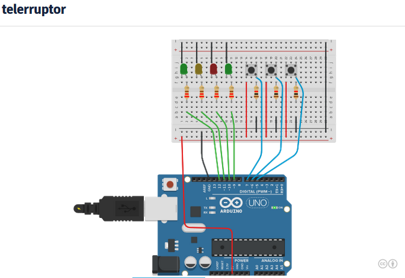

TELERRUPTORCon cada pulsación los led cambian de estado.
 /*Con pulsador 1 enciendo y apago el led verde, con el dos el amarillo y con el tres el rojo y amariillo2al pulsar una vez el pulsador no responde hasta 0,5 segundos despuespara eliminar rebotes y dar tiempo a soltar*/int ledverde=12;int ledamarillo=11;int ledrojo=10;int ledverde1=9;int pulsador1=5;int pulsador2=6;int pulsador3=7; boolean pul_1; boolean flanco1=0; boolean pul_2; boolean flanco2=0; boolean pul_3; boolean flanco3=0; boolean ledV; //ver el estado del led boolean ledA; //ver el estado del led boolean ledR; //ver el estado del led boolean ledV1; //ver el estado del led void setup(){ pinMode(ledverde,OUTPUT); pinMode(ledamarillo,OUTPUT); pinMode(ledrojo,OUTPUT); pinMode(ledverde1,OUTPUT); pinMode(pulsador1,INPUT); pinMode(pulsador2,INPUT); pinMode(pulsador3,INPUT); Serial.begin(9600); } void loop(){ //leemos el estado de las entradas pul_1=digitalRead(pulsador1); pul_2=digitalRead(pulsador2); pul_3=digitalRead(pulsador3); //leemos el estado de la salidas ledV=digitalRead(ledverde);//0 apagado 1 encendido ledA=digitalRead(ledamarillo);//0 apagado 1 encendido ledR=digitalRead(ledrojo);//0 apagado 1 encendido ledV1=digitalRead(ledverde1);//0 apagado 1 encendido //PULSADOR 1 if (pul_1==LOW) flanco1=0; if (pul_1==HIGH && flanco1==0) { flanco1=1;// al activarse flanco a uno en el siguiente ciclo no se ejecuta la condicion. ledV=!ledV; digitalWrite (ledverde,ledV);// como el led estaba encendido lo apago. } //PULSADOR 2 if (pul_2==LOW) flanco2=0; if (pul_2==HIGH && flanco2==0) { flanco2=1;// al activarse flanco a uno en el siguiente ciclo no se ejecuta la condicion. ledA=!ledA; digitalWrite (ledamarillo,ledA);// como el led estaba encendido lo apago. } //PULSADOR 3 if (pul_3==LOW) flanco3=0; if (pul_3==HIGH && flanco3==0) { flanco3=1;// al activarse flanco a uno en el siguiente ciclo no se ejecuta la condicion. ledR=!ledR; ledV1=!ledV1; digitalWrite (ledrojo,ledR);// como el led estaba encendido lo apago. digitalWrite (ledverde1,ledV1); } }//fin de programaTELERRUPTOR Y ANTIRREBOTES
Para
evitar que en el momento de la pulsación se realizen lecturas erroneas
por rebotes, realizo 2 lecturas en un intervalos de 20ms, si son
igulales, considero que la lectura es correcta.
/*Con pulsador 1 enciendo y apago el led verde, con el dos el amarillo y con el tres el rojo y amariillo2al pulsar una vez el pulsador no responde hasta 0,5 segundos despuespara eliminar rebotes y dar tiempo a soltar*/int ledverde=12;int ledamarillo=11;int ledrojo=10;int ledverde1=9;int pulsador1=5;int pulsador2=6;int pulsador3=7; boolean pul_1; boolean flanco1=0; boolean pul_2; boolean flanco2=0; boolean pul_3; boolean flanco3=0; boolean ledV; //ver el estado del led boolean ledA; //ver el estado del led boolean ledR; //ver el estado del led boolean ledV1; //ver el estado del led //Eliminacion de rebotes //variables para eliminar rebotes boolean pul_1a; boolean pul_1b; boolean pul_2a; boolean pul_2b; boolean pul_3a; boolean pul_3b;
unsigned int tiempo_ciclo=20;// la duracion en la que va a producirse
el pulso, puede oscilar entre 65536 ms (65 segundos.) unsigned long tiempo_inicio=0; void setup(){ pinMode(ledverde,OUTPUT); pinMode(ledamarillo,OUTPUT); pinMode(ledrojo,OUTPUT); pinMode(ledverde1,OUTPUT); pinMode(pulsador1,INPUT); pinMode(pulsador2,INPUT); pinMode(pulsador3,INPUT); Serial.begin(9600); } void loop(){ //elimitar los rebotes con dos lecturas de iguales en un intervalo de 20ms if (tiempo_inicio==0) { tiempo_inicio=millis();//si la variable tiempo_inicio vale cero carga el valor de tiempo actual pul_1a=digitalRead(pulsador1); pul_2a=digitalRead(pulsador2); pul_3a=digitalRead(pulsador3); }
if (millis()>tiempo_inicio+tiempo_ciclo)// si el tiempo desde que
cargue la variable supera el tiempo cilclo{ pul_1b=digitalRead(pulsador1); pul_2b=digitalRead(pulsador2); pul_3b=digitalRead(pulsador3);//si la lectura de los pulsadores en 20ms es igual la tomo como buena if (pul_1a==pul_1b)pul_1=pul_1a; if (pul_2a==pul_2b)pul_2=pul_2a; if (pul_3a==pul_3b)pul_3=pul_3a;tiempo_inicio=0;// tiempo_inicio al ponerlo a 0, lca preparo para carga un nuevo tiempo. } //leemos el estado de la salidas ledV=digitalRead(ledverde);//0 apagado 1 encendido ledA=digitalRead(ledamarillo);//0 apagado 1 encendido ledR=digitalRead(ledrojo);//0 apagado 1 encendido ledV1=digitalRead(ledverde1);//0 apagado 1 encendido //PULSADOR 1 if (pul_1==LOW) flanco1=0; if (pul_1==HIGH && flanco1==0) { flanco1=1;// al activarse flanco a uno en el siguiente ciclo no se ejecuta la condicion. ledV=!ledV; digitalWrite (ledverde,ledV);// como el led estaba encendido lo apago. } //PULSADOR 2 if (pul_2==LOW) flanco2=0; if (pul_2==HIGH && flanco2==0) { flanco2=1;// al activarse flanco a uno en el siguiente ciclo no se ejecuta la condicion. ledA=!ledA; digitalWrite (ledamarillo,ledA);// como el led estaba encendido lo apago. } //PULSADOR 3 if (pul_3==LOW) flanco3=0; if (pul_3==HIGH && flanco3==0) { flanco3=1;// al activarse flanco a uno en el siguiente ciclo no se ejecuta la condicion. ledR=!ledR; ledV1=!ledV1; digitalWrite (ledrojo,ledR);// como el led estaba encendido lo apago. digitalWrite (ledverde1,ledV1); } }//fin de programaTiempo y valor máximo de las variables
Y es que al utilizar la variables donde almaceno el tiempo, como int,
esta se me desborda a los pocos minutos de empezar a contar el
programa, y el problema de logica es que el valor de millis()
almacenado puede se negativo y aaggghhh,
Simplifico almaceno el tiempo millis() en una variable que toma valores
solo positivos y me quito el problema de que al leer los millis() me
almacene un numero negativo.
unsigned int tiempo=millis();
unsigned long tiempo=millis();
unsigned float tiempo=millis();
Nota:
long almacena la variable en 4 bytes
unsigned solo considera numeros positivos a partir de cero
la variable almacenada puede tener un valor desde
0 a 2
32=4.294.967.296
Como estamos contado milisegundos
4294967,296 segundos
divido por sesenta y obtengo los minutos
71582788 minutos
Divido por sesenta y obtengo las horas
1193046 horas
Divido por 24 y obtengo los dias
49710 dias
como millis se desborda aproximadamente a los 9 dias esta variable es mas que suficiente.